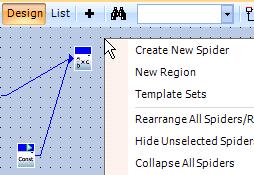

The spider workspace provides a visual or
drag and drop view that is recommended for all users to create the initial
spiders, silks and template sets.
This appears as a separate panean entirely separate working area of a window, often separated by a pane display bar. See pane display bar.
in a window covered by a grid, which provides the following methods to
assist in the adding, arranging and configuring spiders and silks:
The spider
workspace toolbar, which is displayed at the top of the spider workspace,
by default.
A right-click menu,
which is displayed when a user right-clicks the spider workspace grid.
This provides the following items from top to bottom:
Note: Menu items
that are enabled will have a tick mark to the left of them.
Create
New Spider: This menu can be selected to add a spider to the spider
workspace. For details, see Adding
spiders. This displays a menu listing the available categories and
their spiders. For details, see Available
spiders.
New
Region: This adds a new region to the spider workspace which can
contain one or more spiders. For details, see Spider
regions.
Template
Sets: This menu can be selected to add a template set to the spider
workspace or to manually activate an existing template set. For details,
see Adding template sets
or Activating template
sets. spider
workspace
Rearrange
All Spiders/Regions: This neatly and logically arranges the spiders,
regions and silks to illustrate the flow of data. For details, see Rearranging spiders and regions.
Hide
Unselected Spiders/Regions: This menu allows you to specify (and
apply) the hiding filter that you require to the spider workspace. For
details, see Hiding unselected
spiders and regions.
Collapse
All Spiders: This hides the configuration views of all the spiders
that have been added to the spider workspace, usually to add additional
spiders or to neatly rearrange them. For details, see Hiding
spider configuration views.
Link
To New Server...: This can be used to specify the required naming
of the Server(s) containing
the data elements used within this spider workspace. This can be used
to specify different Servers or the default Server to make it easier to
import graphic forms into projects on other Servers. For details, see
Changing data element referencing.
Paste:
This adds a copy of a spider that was copied where the mouse pointer is
currently situated. For details, see Copying and pasting spiders.
Delete
All Silks...: This will remove all the silks from this spider workspace.
For details, see Removing
silks. This does however provide a confirmation dialog first.
Delete
All Spiders...: This will remove all the spiders and their silks
from this spider workspace, including any behaviours and regions. For details, see Removing
spiders. This does however provide a confirmation dialog first.
Delete
All Unused Regions: This removes all regions that are empty.
Import
Configuration: This will import spider and/or silk configuration
to a Microsoft Excel XML file. For details, see Importing
spiders and silks.
Export
Configuration: This will export spider and/or silk configuration
from a Microsoft Excel XML file. For details, see Exporting
spiders and silks.
Tip: This exported
Microsoft Excel XML file can be used to quickly add a large number of
silks on different template sets to different spiders and to quickly view
and edit all the spiders’ configurations in a single spreadsheet.
This is an example of the spider workspace that appears when animating
a graphic form, indicating the two methods by which it can be configured,
namely the toolbar or right-click menu.

Note: This view provides a number of indicators that visually display
the status of common spider and silk properties. For details, see Visual property indicators.
Typical functions to perform:
Add a spider : to perform
additional manipulation or formatting of data
Configure a spider :
to configure inputs and/or outputs or change how the spider is triggered.
Create a silk : to
join two spiders together or connect a spider to a property of a form
component

 in a window covered by a grid, which provides the following methods to
assist in the adding, arranging and configuring spiders and silks:
in a window covered by a grid, which provides the following methods to
assist in the adding, arranging and configuring spiders and silks: right-click menu,
which is displayed when a user right-clicks the spider workspace grid.
right-click menu,
which is displayed when a user right-clicks the spider workspace grid.